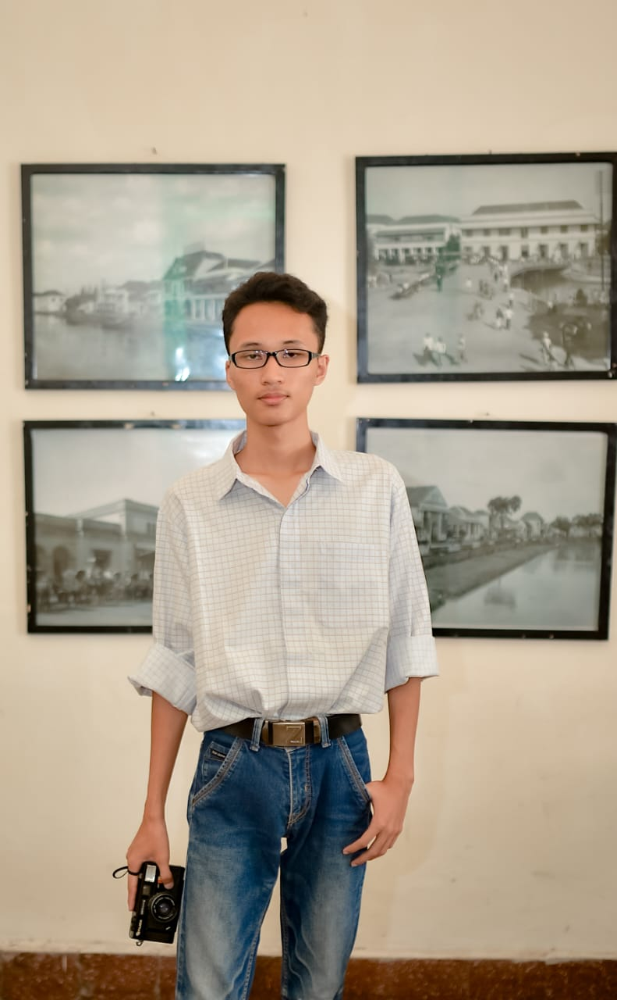

Machine Learning Engineer yang fokus pada Predictive Modeling. Selain itu, saya juga membangun sistem Web modern menggunakan Golang & React.

Kombinasi antara Data Science yang mendalam dan Engineering yang skalabel.
Membangun solusi end-to-end dari raw data hingga production model.
Development backend berkinerja tinggi dan frontend modern.
Sebuah proyek machine learning untuk melakukan klasifikasi sentimen (positif/negatif) pada ulasan produk dari platform e-commerce Tokopedia. Model ini dilatih dan dioptimalkan untuk mencapai akurasi 95% dalam memprediksi sentimen berdasarkan teks ulasan.
Sebuah proyek machine learning dari eksplorasi hingga pemodelan yang berhasil mencapai skor 0.78 pada private leaderboard.